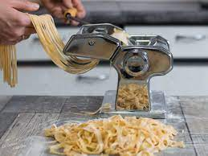

Pasta

Description
Ah, les pâtes ! Il existe tellement de plats réalisés avec des pâtes
qu'il y en a pour tous les goûts ! Qu'il s'agisse de simples pâtes, de raviolis, lasagnes ou autre,
la recette pour faire la pâte reste la même.
Ingredients
- Farine
- Oeufs
- Huile d'olive
Steps
- Mélanger les oeufs avec un peu de farine et l'huile
- Rajouter de la farine, petit à petit, jusqu'à obtenir une pâte homogène
- Laisser reposer au moins 30min.
- Etaler la pâte avec la machine à pâtes (2nd cran).
- Cuire les pâtes !